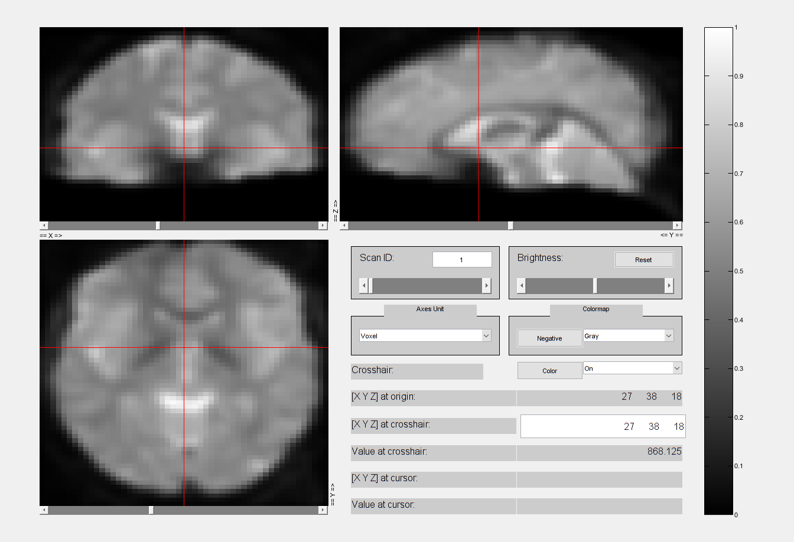
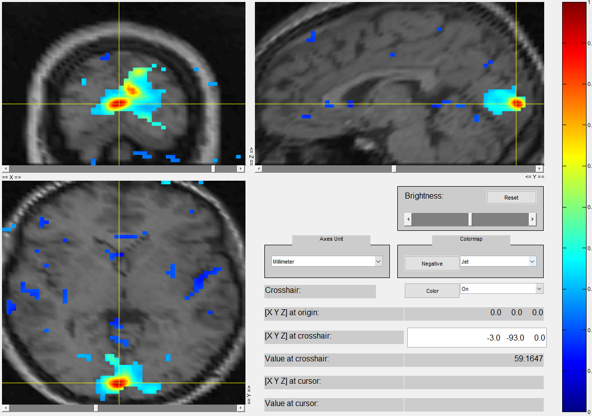
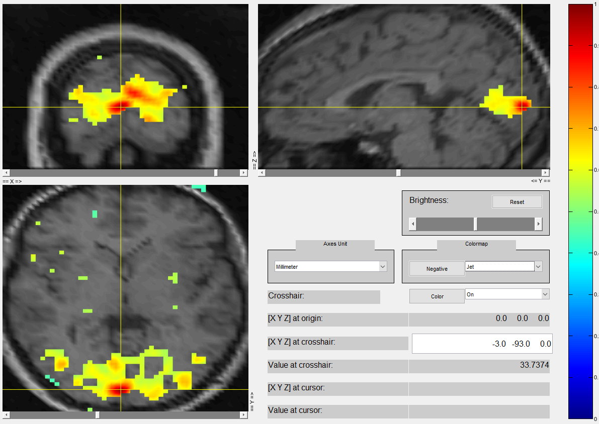
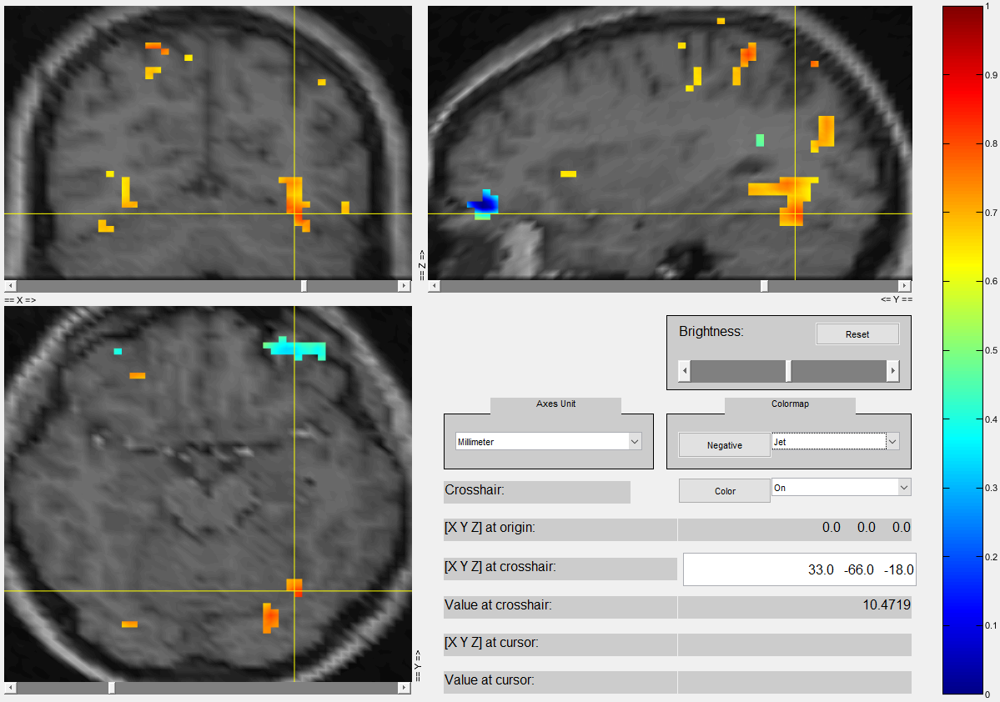

Assignment 7 - Dimitar Dimitrov - s1018291
9.1 - design matrix
9.1 - a)
load('FinalAssignment_fMRI_data.mat')
9.1 - b)
view_scan(Y);
9.1 - c)
function [X] = generateDesignMatrix(fix, stat, natt, att, hrf, n_scans) % function [X] = generateDesignMatrix(fix, stat, natt, att, hrf, n_scans) % creates a Design Matrix based on 6 variables: % - fix, stat, natt, att - 4 1-D vectors, containing scan index of % respective condition presentation % - hrf - 1-D vector, containing the hemodynamic response function % - n_scans - the number of scans in the fMRI data D = zeros(n_scans, 5, 'single'); D(fix,2) = 1; D(stat,3) = 1; D(natt,4) = 1; D(att,5) = 1; XD = conv2(D, hrf); X = XD(1:n_scans,:); X(:,1) = 1; end
9.3 - contrast
9.3 - a)
function [betas, Yhat, residuals] = computeBetaYhatResiduals(X,Y) % function [betas, Yhat, residuals] = computeBetaYhatResiduals(X,Y) % takes 2 variables: % - X - 2-D Design Matrix % - Y - 4-D fMRI data % performs regression and returns for each voxel: % - beta values % - prediction based on beta values % - residuals based on data and predictions % each variable returned being 4-D as well [x,y,z,ts] = size(Y); Yr = reshape(Y, [x*y*z, ts]); betas = X\Yr'; Yhat = X*betas; residuals = Yr' - Yhat; betas = reshape(betas', [x,y,z,5]); Yhat = reshape(Yhat', [x,y,z,ts]); residuals = reshape(residuals', [x,y,z,ts]); end
function [contrast] = applyContrast(betas1, betas2, residuals) % function [contrast] = applyContrast(betas1, betas2) % calculates the contrast between two conditions/explanatory % variables' beta values % % takes 2 values: % - betas1 - the beta values of first explanatory variable % - betas2 - the beta values of second explanatory variable contrast = betas1-betas2; end
9.3 - b)
[~,~,~,nr_scans] = size(Y); X = generateDesignMatrix(fix, stat, natt, att, hrf, nr_scans); [betas, Yhat, residuals] = computeBetaYhatResiduals(X,Y); c1 = applyContrast(betas(:,:,:,3), betas(:,:,:,2)); c2 = applyContrast(betas(:,:,:,4), betas(:,:,:,3)); c3 = applyContrast(betas(:,:,:,5), betas(:,:,:,4)); view_scan(c1); view_scan(c2); view_scan(c3);
9.3 - b) ANSWER
- Stat - Fix - coordinates (in mm): (0.0,-93.0,0.0)
- Natt - Stat - coordinates (in mm): (0.0,-96.0,0.0)
- Att - Natt - coordinates (in mm): (3.0,12.0,69.0)
9.4 - significant contrast
9.4 - a)
function [contrast] = applyContrast(betas1, betas2, residuals) % function [contrast] = applyContrast(betas1, betas2) % calculates the significant contrast between two conditions/explanatory % variables' beta values % % takes 3 values: % - betas1 - the beta values of first explanatory variable % - betas2 - the beta values of second explanatory variable % - residuals - the residuals computed by subtracting the values predicted % from betas from the actual recorded data contrast = betas1-betas2; [~,~,~,ts] = size(residuals); sq_std = sum((residuals.^2), [4]) / (ts-1); t = contrast./sqrt(sq_std./ts); contrast(abs(t)<10) = 0; end
load('FinalAssignment_fMRI_data.mat')
[x,y,z,nr_scans] = size(Y);
X = generateDesignMatrix(fix, stat, natt, att, hrf, nr_scans);
[betas, Yhat, residuals] = computeBetaYhatResiduals(X,Y);
c1 = applyContrast(betas(:,:,:,3), betas(:,:,:,2), residuals);
c2 = applyContrast(betas(:,:,:,4), betas(:,:,:,3), residuals);
c3 = applyContrast(betas(:,:,:,5), betas(:,:,:,4), residuals);
9.4 - b)
view_scan(ana, c1); view_scan(ana, c2); view_scan(ana, c3);  
9.4 - b) ANSWER
- Stat - Fix - coordinates (in mm): (-3.0,-93.0,0.0)
- Natt - Stat - coordinates (in mm): (-3.0,-93.0,0.0)
- Att - Natt - coordinates (in mm): (33.0,-65.0,-18.0)
9.5 - everything in a single function
function [] = analysefMRIData(file_name) %function [] = analysefMRIData(file_name) % Opens a .mat file with fMRI data and analyses it then displays the % areas of the brain with significant contrast on top of the anatomical scan. % % The function will plot three figures: % - The 1st figure shows contrast Stat - Fix % - The 2nd figure shows contrast Natt - Stat % - The 3rd figure shows contrast Att - Natt % % Assumed data inside the file: % - Y - 4-D matrix containing fMRI signal % - ana - 3-D matrix containing anatomical scan signal % - hrf - 1-D vector containing hemodynamic response function % - att, natt, stat, fix - each a 1-D vector, containing the scan index at % which the respective condition was presented % % Assumed custom functions available: % - [X] = generateDesignMatrix(fix, stat, natt, att, hrf, n_scans) % - [betas, Yhat, residuals] = computeBetaYhatResiduals(X,Y) % - [contrast] = applyContrast(betas1, betas2) % load the file data = load(file_name); % acquire number of scans from dimensions of data [~,~,~,nr_scans] = size(data.Y); % create a design matrix X = generateDesignMatrix(data.fix, data.stat, data.natt, data.att, data.hrf, nr_scans); % do regression on the data using the design matrix % to obtain betas and residuals [betas, ~, residuals] = computeBetaYhatResiduals(X,data.Y); % compute the contrast of the betas in each voxel for the 3 conditions % taking into account significance level (p=0.05, t=10) % condition stat - fix c1 = applyContrast(betas(:,:,:,3), betas(:,:,:,2), residuals); % condition natt - stat c2 = applyContrast(betas(:,:,:,4), betas(:,:,:,3), residuals); % condition att - natt c3 = applyContrast(betas(:,:,:,5), betas(:,:,:,4), residuals); % visualize the voxels with significant contrast (essentially where % activity was observed) on top of the anatomical scan % condition stat - fix view_scan(data.ana, c1); % condition natt - stat view_scan(data.ana, c2); % condition att - natt view_scan(data.ana, c3); end